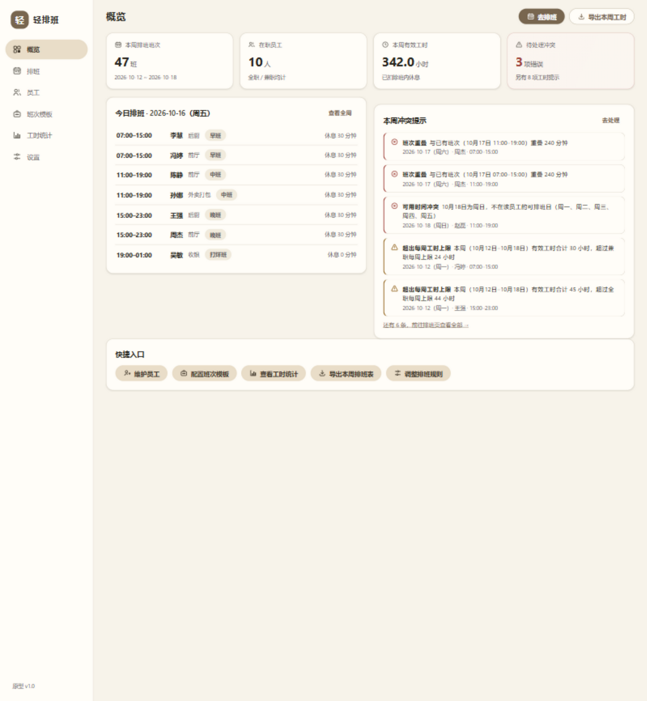
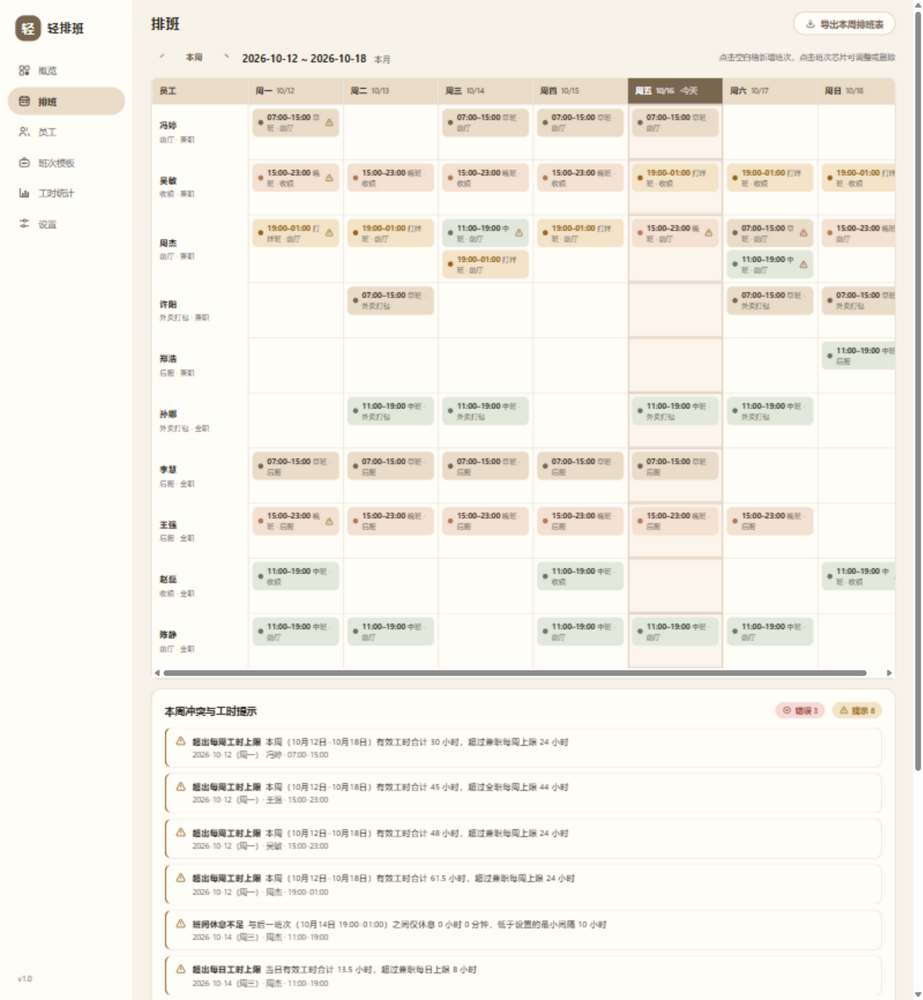
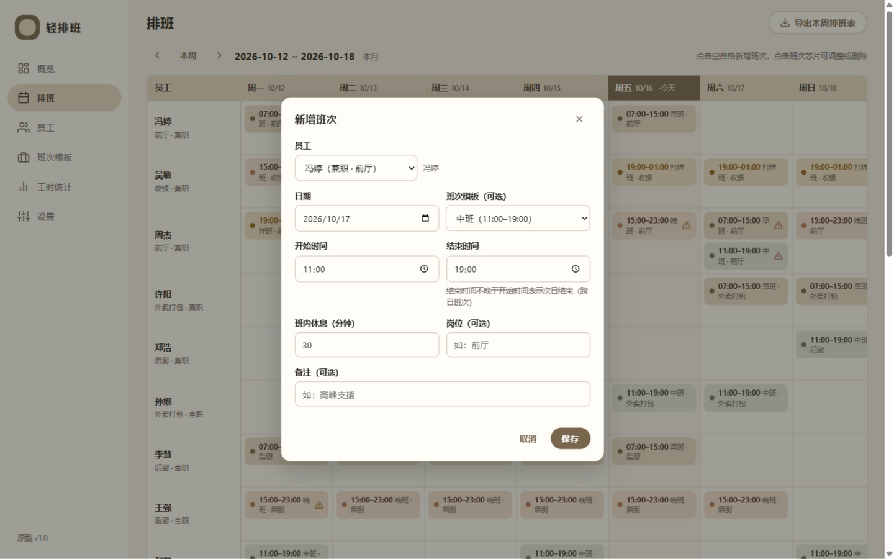
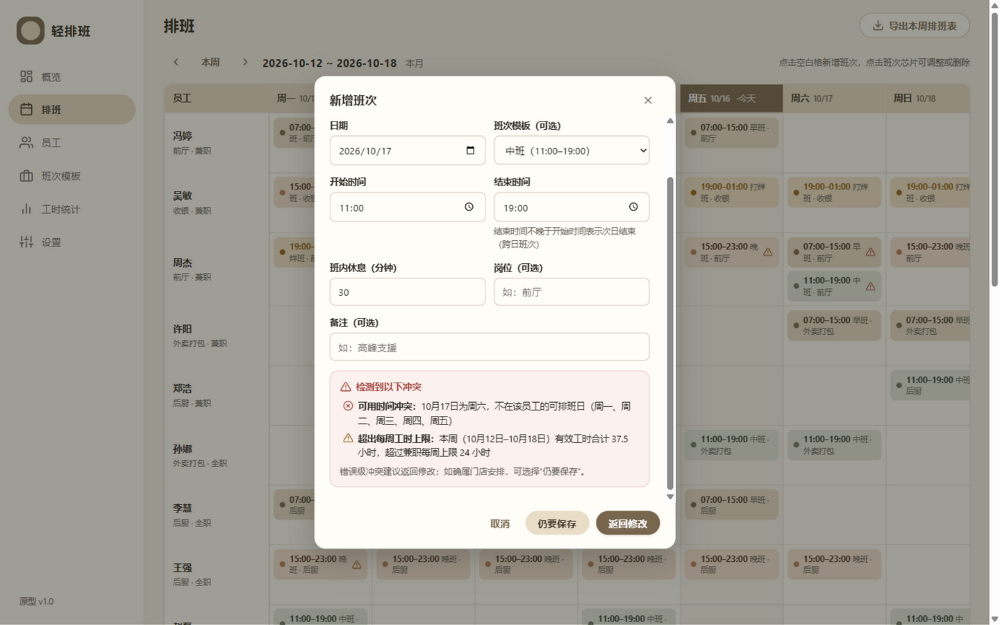
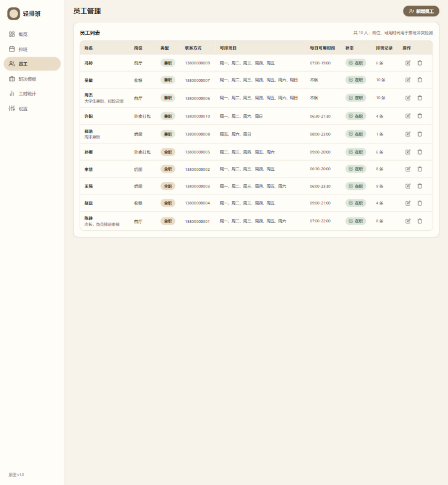
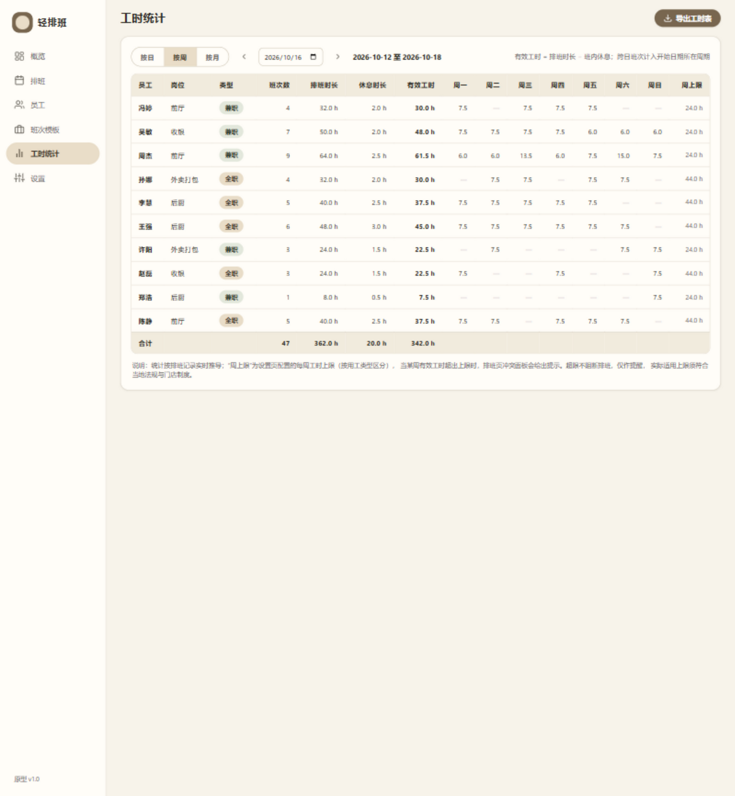
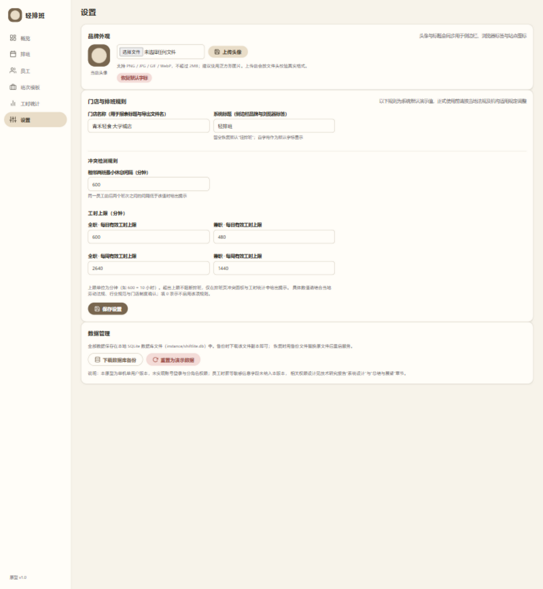
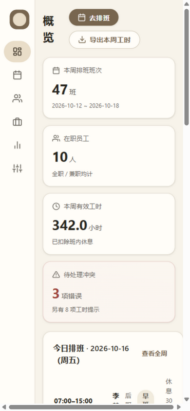

系统采用经典三层结构，核心业务逻辑独立成纯函数模块，与 Web 框架解耦：
图 3-1 系统分层架构（文字示意）
主要数据流：排班页加载时，应用层读取该周排班与相邻班次，调用 check_conflicts 计算冲突并在服务端渲染进网格与冲突面板；保存排班时，前端以 JSON 提交，应用层校验后调用同一冲突检测函数，存在错误级冲突则返回 409 与冲突明细，用户确认后携带 force 标志重新提交方可落库。读取与写入共用同一套规则实现，保证“检测口径 = 展示口径”。
| 技术 | 版本 | 选择理由 |
|---|---|---|
| Python | 3.14 | 语法简洁、标准库完善，适合快速构建原型；团队学习成本低 |
| Flask | 3.1 | 轻量 Web 框架，路由/模板/测试支持齐备，无需脚手架即可运行，匹配“轻量单店工具”定位 |
| SQLite | 3（标准库 sqlite3） | 零配置、单文件、事务完整；单店单机场景无需独立数据库服务，备份即复制文件 |
| Jinja2 + 原生 CSS/JS | 3.1 / ES2020 | 服务端渲染减少前后端联调成本；Material 3 无官方轻量 Web 组件且比赛环境可能离线，故按 M3 设计令牌（token）自行实现组件样式，不引入构建工具与运行时依赖 |
| openpyxl | 3.1 | 纯 Python 写入 .xlsx，支持合并单元格、填充色等样式，满足报表美化需求 |
| pytest | 9.1 | 参数化与夹具机制成熟，适合对纯函数核心做密集单元测试 |
选型限制说明：Flask 开发服务器为单线程参考实现，原型按单用户设计，未做并发控制与生产部署加固；若后续多用户使用，应更换生产级 WSGI 服务器并增加认证层。
共 4 张表：员工（employees）、班次模板（shift_templates）、排班记录（schedules）、规则配置（settings）。完整 DDL 见附录 A。
| 表 | 主要字段 | 说明 |
|---|---|---|
| employees （员工） | id(PK)、name、position、employment_type(fulltime/parttime)、phone、available_days(JSON 数组，ISO 星期 1–7)、available_from/to、status(active/inactive)、note、created_at | 可用时间用于冲突检测；时薪等敏感字段按最小化收集原则未纳入 |
| shift_templates （班次模板） | id(PK)、name、start_time、end_time(早于开始即跨日)、break_minutes、position、color(芯片配色 token)、note | 常用班次的可复用定义 |
| schedules （排班记录） | id(PK)、employee_id(FK→employees)、work_date(开始日期)、start_time、end_time、break_minutes、position、template_id(FK→shift_templates, ON DELETE SET NULL)、note、created_at | 班次时间在创建时保存快照，模板删除不影响历史排班；索引 (employee_id, work_date) 与 (work_date) 支撑周查询 |
| settings （规则配置） | key(PK)、value | 门店名称、最小休息间隔、四项工时上限等键值对，界面可改 |
实体关系：employees 1—N schedules；shift_templates 1—N schedules（弱关联，置空不级联删除）。
设计决策一（工时不单独建表）：工时统计由排班记录实时推导而非落库。排班是工时的唯一数据源，推导式统计天然避免“排班已改、工时未同步”的双写不一致；若后续接入考勤打卡，再引入实际工时表与“计划/实际”对照，属扩展方向。
设计决策二（跨日归属）：跨日班次整体归属开始日期所在的日/周/月统计周期。该规则在冲突检测（周上限）与工时统计两处一致执行，并在界面文案中明示。
排班编制围绕周视图网格展开：行=在职员工（含岗位与用工类型），列=周一至周日。新增班次流程为：点击空白格 → 对话框自动带入员工与日期 → 选择模板自动填充时段与休息（或自定义时间）→ 前端基础校验 → 提交 JSON API → 服务端校验与冲突检测 → 无错误级冲突直接保存，有则返回 409 由用户确认。调整与删除通过点击既有班次芯片进入同一对话框完成，编辑时冲突检测自动排除自身记录。
检测函数 check_conflicts(候选排班, 该员工既有排班, 员工约束, 规则配置) 为纯函数，输入输出均为值对象，判定步骤：
统计口径统一为：有效工时 = 班次跨度 − 班内休息（跨度按跨日规则展开）；跨日班次整体归属开始日期所在周期；周定义为周一至周日，月为自然月。汇总函数对区间内排班逐条累加，输出每人的班次数、排班时长、休息时长、有效工时与逐日明细（用于周视图的逐日列与导出）。统计与冲突检测共用同一组时间函数，口径一致。
导出在服务端用 openpyxl 生成工作簿并内存返回。字段映射：
| 报表 | 列结构 | 样式与辅助信息 |
|---|---|---|
| 排班表 | 日期、星期、员工、岗位、班次时段、休息(分钟)、有效工时(小时)、备注 | 标题行含门店名与周期；存在冲突的排班在备注列追加“冲突提示 N 条” |
| 工时统计表 | 员工、岗位、类型、班次数、排班时长、休息时长、有效工时 + 周视图追加周一至周日逐日列 | 末行为合计行；表头使用主色容器色填充，冻结表头 |
界面遵循 Material 3 设计语言的语义化色彩角色与组件形态，以米 beige 为主色调，营造清晰、亲和的日常工具气质。全部色彩以 CSS 自定义属性（设计令牌）统一管理：
| 语义角色 | 色值 | 应用位置 |
|---|---|---|
| 页面背景 background | #F7F3EA | 全局页面底色 |
| 表面/卡片 surface | #FFFDF8 | 卡片、表格、对话框 |
| 主色 primary | #78664F | 填充按钮、选中导航、今日列强调 |
| 主色容器 primary-container | #E9DDC8 | 表头、选中态背景、班次芯片（早班） |
| 次要色 secondary | #6D7765 | 兼职芯片、次要容器 |
| 强调色 tertiary | #B47B55 | 晚班芯片、强调元素 |
| 主要文字 / 次要文字 | #292720 / #68645C | 正文与辅助说明 |
| 边框 outline | #DED7CA | 卡片描边、分隔线、表格线 |
| 成功 / 警告 / 错误 | #526B55 / #94651E / #A1463D | 状态芯片与冲突面板，均配图标+文字表达 |
组件层面实现了 M3 风格的导航栏（导航项胶囊选中态）、卡片、填充/色调/描边/文本四类按钮、对话框、提示条（snackbar）、芯片（chip）、分段按钮与数据表格。排班网格以间距与表面层级组织信息，不使用厚重阴影；今日列以主色高亮；跨日班次以“夜班”配色芯片区分。所有状态（冲突、成功、警告）同时通过图标与文字表达；交互元素均有可见焦点态，排班网格单元格与班次芯片可键盘到达（Tab + Enter/Space 触发）。
页面共 6 个：概览（今日排班+本周冲突摘要+统计卡片）、排班（周网格+冲突面板+班次对话框）、员工、班次模板、工时统计（按日/周/月切换）、设置（品牌外观+规则配置+数据管理）。界面同时兼顾小屏浏览（导航栏自动收窄为图标栏，网格横向滚动），小屏效果见 4.5 节图 4-8。
| 项 | 内容 |
|---|---|
| 操作系统 | Windows 11（x64）；代码不含平台特有依赖，亦可运行于 Linux/macOS |
| 开发语言与框架 | Python 3.14.7；Flask 3.1.3；openpyxl 3.1.5；pytest 9.1.1 |
| 运行环境 | 任意现代浏览器（Chrome / Edge / Firefox）；无需联网，无构建步骤 |
| 部署形态 | 本机运行 python app.py，监听 127.0.0.1:5001；数据文件 instance/shiftlite.db；亦提供 Dockerfile 与 SHIFTLITE_DB/SHIFTLITE_SECRET 环境变量用于云端部署（见 README） |
shiftlite/
├── app.py # Flask 应用：页面路由、JSON API、导出与备份端点
├── db.py # SQLite 连接、建库初始化、规则配置读写
├── schema.sql # 数据库 DDL（附录 A）
├── seed.py # 演示数据（10 员工 / 4 模板 / 两周 68 条排班，含埋设冲突）
├── core/ # 核心业务（纯函数，不依赖 Flask）
│ ├── scheduling.py # 时间区间展开、有效工时、五类冲突检测
│ ├── worktime.py # 按日/周/月工时汇总
│ └── exporter.py # openpyxl 报表生成
├── templates/ # Jinja2 页面（base + 6 页面 + 宏）
├── static/
│ ├── css/theme.css # Material 3 米 beige 主题（设计令牌 + 组件）
│ └── js/ # app.js 公共交互 / schedule.js 排班页交互
├── tests/ # pytest：26 项核心单元 + 6 项工时 + 3 项导出 + 6 项认证 + 17 项功能
├── scripts/benchmark.py # 性能计时脚本
└── docs/ # 技术研究报告、截图、性能测量结果pip install -r requirements.txt # 安装依赖（Flask、openpyxl；开发需 pytest）
python seed.py # 首次运行写入演示数据（python seed.py --force 可重置）
python app.py # 启动服务，浏览器访问 http://127.0.0.1:5001（默认密码 shiftlite123，登录后请修改）
python -m pytest tests/ # 运行全部自动化测试def shift_span_minutes(start_hhmm: str, end_hhmm: str) -> int:
"""班次跨度（分钟），跨日自动加 24 小时；起止相同视为非法。"""
start, end = parse_hhmm(start_hhmm), parse_hhmm(end_hhmm)
if start == end:
raise ValueError("班次开始与结束时间相同")
span = end.hour * 60 + end.minute - (start.hour * 60 + start.minute)
if span < 0:
span += 24 * 60
return span
def effective_minutes(start_hhmm, end_hhmm, break_minutes) -> int:
"""有效工时（分钟）= 跨度 − 休息时长，下限 0。"""
return max(0, shift_span_minutes(start_hhmm, end_hhmm) - int(break_minutes or 0))
def shift_datetime_range(work_date, start_hhmm, end_hhmm):
"""把“日期 + 起止时间”展开为绝对时间区间，跨日结束时间落到次日。"""
start = datetime.combine(work_date, parse_hhmm(start_hhmm))
end = datetime.combine(work_date, parse_hhmm(end_hhmm))
if end <= start:
end += timedelta(days=1)
return start, end这三个函数是全部口径的基础：跨度计算允许“19:00–01:00”式跨日班次；有效工时统一扣除休息；区间展开把班次映射到绝对时间轴，供重叠与间隔判定使用。起止相同被显式拒绝，避免出现“24 小时班次”的二义性。
# 规则一：班次时间重叠（硬冲突）
for s, e, row in spans: # spans 为既有班次的绝对时间区间
ov = overlap_minutes(c_start, c_end, s, e)
if ov > 0:
conflicts.append(Conflict(
"overlap", SEVERITY_ERROR,
f"与已有班次（{row['work_date'].strftime('%m月%d日')} "
f"{row['start_time']}–{row['end_time']}）重叠 {ov} 分钟",
row.get("id")))
# 规则五：每周（周一至周日）有效工时上限，按班次开始日期归属（提示）
w_start, w_end = week_range(c_date)
week_rows = [row for row in existing
if w_start <= row["work_date"] <= w_end
and (candidate.get("id") is None or row.get("id") != candidate["id"])]
week_total = c_eff + sum(
effective_minutes(r["start_time"], r["end_time"], r["break_minutes"])
for r in week_rows)
weekly_limit = int(settings.get(
"weekly_max_minutes_fulltime" if emp_type == "fulltime"
else "weekly_max_minutes_parttime") or 0)
if weekly_limit > 0 and week_total > weekly_limit:
conflicts.append(Conflict(
"weekly_limit", SEVERITY_WARNING,
f"本周（{w_start.strftime('%m月%d日')}–{w_end.strftime('%m月%d日')}）"
f"有效工时合计 {_fmt_hours(week_total)}，超过{type_label}每周上限 {_fmt_hours(weekly_limit)}"))检测函数返回统一的 Conflict 数据对象（规则、级别、解释性消息、关联记录），消息直接给出“与哪一天哪一班的重叠分钟数”“合计多少小时、超哪条上限”等具体数字，保证提示可理解、可核对。页面/API 层据此决定阻断（错误级）或仅提示（提示级）。
conflicts = _conflicts_for(conn, payload)
hard = [c for c in conflicts if c["severity"] == "error"]
if hard and not request.args.get("force"):
return jsonify({"conflicts": conflicts}), 409 # 前端弹出冲突确认
cur = conn.execute("INSERT INTO schedules(...) VALUES (...)", (...))
conn.commit()
return jsonify({"id": cur.lastrowid, "conflicts": conflicts}), 201保存接口遇到错误级冲突返回 409 与完整冲突明细；前端对话框内联展示冲突列表，用户选择“仍要保存”时携带 force 标志重新提交。该设计既强制人工确认硬冲突，又保留门店特殊安排的最终决定权。
def export_hours(store_name, period_label, summary, day_columns=None):
wb = Workbook(); ws = wb.active; ws.title = "工时统计"
headers = ["员工", "岗位", "类型", "班次数", "排班时长(小时)",
"休息时长(小时)", "有效工时(小时)"]
if day_columns:
headers += [label for _, label in day_columns] # 周一…周日逐日列
...
total = ["合计", "", "", sum(i["shifts"] for i in summary), ...] # 合计行
for col, value in enumerate(total, start=1):
cell = ws.cell(row=r, column=col, value=value)
cell.fill = PatternFill("solid", fgColor=THEME["total_fill"])以下截图均为实际运行系统（演示数据）的真实画面。








各功能与需求条目的对应关系及实现位置：
| 需求 | 实现要点 | 对应代码 / 界面 |
|---|---|---|
| FR1 员工管理 | 增删改查、可用时间维护、停用保护 | app.py employees_page；templates/employees.html（图 4-5） |
| FR2 班次模板 | 跨日定义、休息分钟、配色、使用计数 | app.py shift_templates_page；shift_templates.html |
| FR3 排班维护 | 周网格点选、模板套用、编辑/删除 | schedule_page + /api/schedules；schedule.js（图 4-2、4-3） |
| FR4 冲突检测 | 五类规则、409 确认流、面板去重 | core/scheduling.py；图 4-4 |
| FR5 工时统计 | 日/周/月切换、逐日明细、口径注释 | core/worktime.py；hours.html（图 4-6） |
| FR6 报表导出 | 排班表/工时表 xlsx、主题样式、冲突备注 | core/exporter.py；/export/* 端点 |
| FR7 数据与权限 | SQLite 单文件、备份下载、规则配置 | settings_page、/backup（图 4-7） |
| 条目 | 状态 |
|---|---|
| 员工 / 模板 / 排班 / 冲突 / 工时 / 导出 / 规则配置 / 备份 | 已实现并通过测试 |
| 品牌自定义（系统标题、头像上传/移除，同步站点图标） | 已实现并通过测试 |
| 小屏适配、键盘可达、状态反馈（空/成功/失败/冲突） | 已实现 |
| 管理员密码登录（PBKDF2 哈希、限速、改密、登出） | 已实现并通过测试 |
| 员工自助账号与分角色权限 | 未实现，列为后续工作（6.4） |
| 员工移动端自助查看、考勤打卡、排班建议算法、薪资对接 | 未实现，列为后续工作（6.4） |